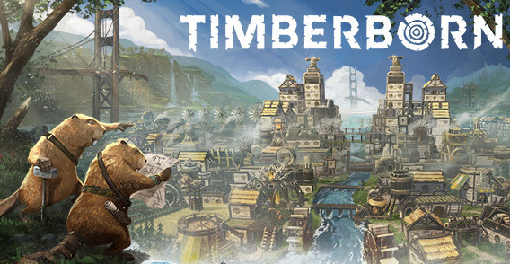

Join us for the Steam Digital Board Games Festival starting October 21 at 19:00 (UTC + 2)! This Steam celebration of board game-inspired games will feature hundreds of discounted titles through the 25th at 19:00 (UTC + 2). Additionally, this year's edition will highlight role-playing games, including three days of premiere broadcast events, presented in association with Auroch Digital, from October 22-24.
For the full program of events, check out our preview of the Digital Board Games Festival, where you can chat with the creators of your favorite physical and digital board games during the weekend. Until then, you can add premiere broadcast events to your own calendar, to join the live chat with the speakers and collaborators, once the reminder arrives.
Save the date! See you October 21-25 for the Steam Digital Board Games Festival, with live broadcast events, from the RPG edition, from October 22-24.
What is FIFA?
Play the game of the world with more than 17,000 players, more than 700 teams, more than 90 stadiums and more than 30 leagues from around the world.
With EA Play, playing will be more rewarding and you will have access to great exclusive player benefits and a library of the best titles. Play before anyone else with the exclusive 10-hour member trial. Members will also get XP boosters in Ultimate Team, seasonal VOLTA FOOTBALL outfits, monthly FUT Stadium customization items, and a 10% discount on digital purchases of EA items.
Counter-Strike: Global Offensive
Let's see first ... What is the Trust Factor? What use is it?
Well, the Trust Factor is like an "upgrade" to the CS: GO MM.
It serves to provide better ratio to players and MatchMaking
- Use Steam Guard.
- Evaluate demos (Requirements to unlock qualifying demos: Gold Nova rank l, Win at least 150 matches).
- Make your profile public.
- Be an active member of the Steam Community.
- Grade guides (like this one)
- List, guide rewards. (For example, this one)
- Get recommendations from your teammates.
- Don't block your teammates and don't shoot them in the game.
- Add more friends.
- Comment on various profiles, discussions, and guides. (For example, mine)
How to have TRUST FACTOR in GREEN CS: GO
Besides the social engineering taking (1) place by cheatmakers, there is also a lot of misinformation out there, or simple knowledge of the subject.
Simply put, VAC detects when someone is cheating on a VAC-protected server (2). This works delayed to catch more cheaters, because otherwise one person could just use one singular account till he finds a way to bypass VAC and then spread it. With it being more unclear what triggered it, and in what time frame, results in more cheaters getting banned and keeps them on their toes.

Why early access?
“Since the beginning of the project, back in 2018, we have been inviting players to try Timberborn. The genre of city building simulators with beavers is not the order of the day, and that is why your comments help us to know what works and what does not. And now, thanks to those comments, we can present the foundations on which the game is built: it is fun and we want to make it available to everyone.
We will be adding more content until launch, and with the help of Early Access members we will decide what to do next. Until then, Timberborn will continue to have that scent of work to do and freshly cut wood. ”
Approximately how long will this game be in Early Access?
“We expect early access to last for at least a year. We have a lot of ideas on what to do before launch (see below), but player feedback affects that process and we want to put in extra hours to serve them. ”
How will the full version be different from the Early Access version?
“Timberborn has evolved thanks to player feedback and we want to keep it that way for the rest of Early Access. Player feedback sets guidelines for what to add to the game.
READ MORE